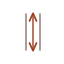
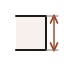
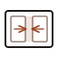
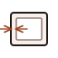
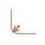
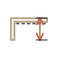
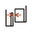
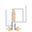

The design sources for the app's artwork: dimension sketches for the numeric parameter fields
(64×64) and isometric closure icons for the lid picker (64×66). Every colour in these files is a
var(--tt-icon-*, #fallback) pair, so the icons re-tint with the app theme. The
custom properties are published from src/app/theme.ts; the fallbacks below are the
light-theme values, which is what you see here — an <img> is its own document
and can't read the page's variables.
What ships is ParamIcon.tsx and LidIcon.tsx, which inline the same
markup so the tokens actually resolve. Edit a sketch here, then mirror it there.
Two variants were drawn for most quantities; the one the app ships is noted in ParamIcon.tsx.







